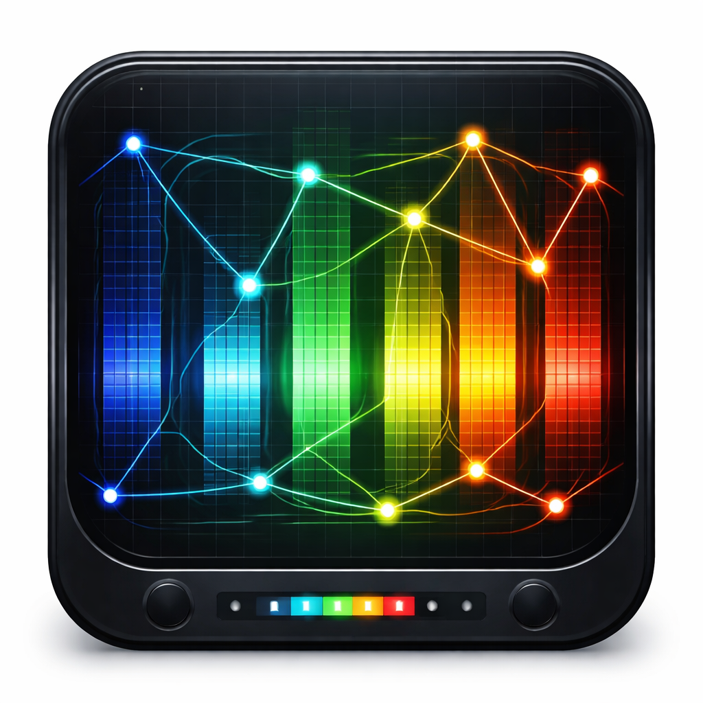
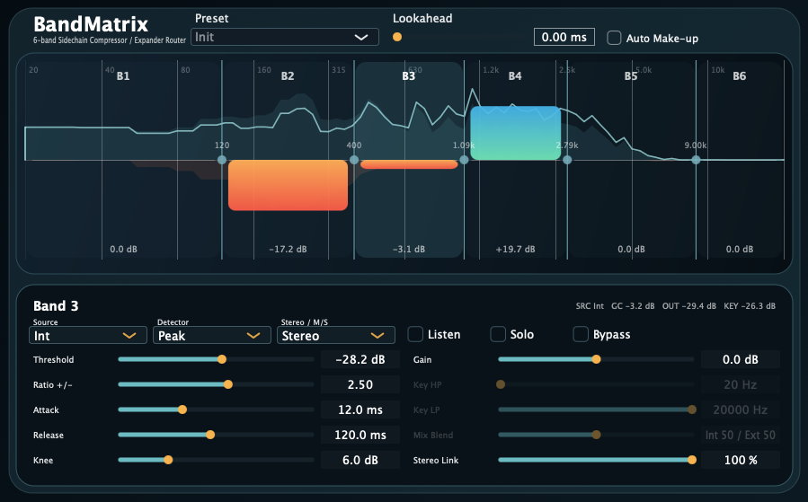

Released — Version 1.6.0.
6-Band SideChain Compressor / Expander Router
BandMatrix is a macOS dynamics plug-in (AAX / AU / VST3) built for multi-band sidechain compression with flexible key routing. Each band can be driven by the internal signal, the external sidechain input, or even an arbitrary other band — so you can create targeted, musical ducking and inter-band control. Version 1.6.0 includes an update intended to address a reported Windows issue, although this has not yet been fully confirmed.
Latest downloads are available for Apple Silicon macOS and Windows VST3. New in version 1.6.0: an update intended to resolve a reported Windows issue, although this has not yet been fully confirmed because I do not currently have a Windows machine to verify it directly. Windows AAX support is planned for a future release.

Current release.
Previous release.
Previous release.
Earlier release.
Earlier release.
Stability update following the original release.
First public release of BandMatrix.
Duck only the bass low band from the kick, keeping mids and highs stable and punchy.
Make space for vocals by gently ducking specific instrument bands using internal or external keys.
Create inter-band dynamics (one band driving another) for movement, emphasis, and controlled aggression.
BandMatrix_1.6.0.pkgNote: The installer includes AAX / AU / VST3 builds for Apple Silicon.
BandMatrix_1.6.0.pkg from this page.
Email: kjdevapphelp@gmail.com
Please include: macOS version, Pro Tools version, and a short description (or screenshot) of the issue.